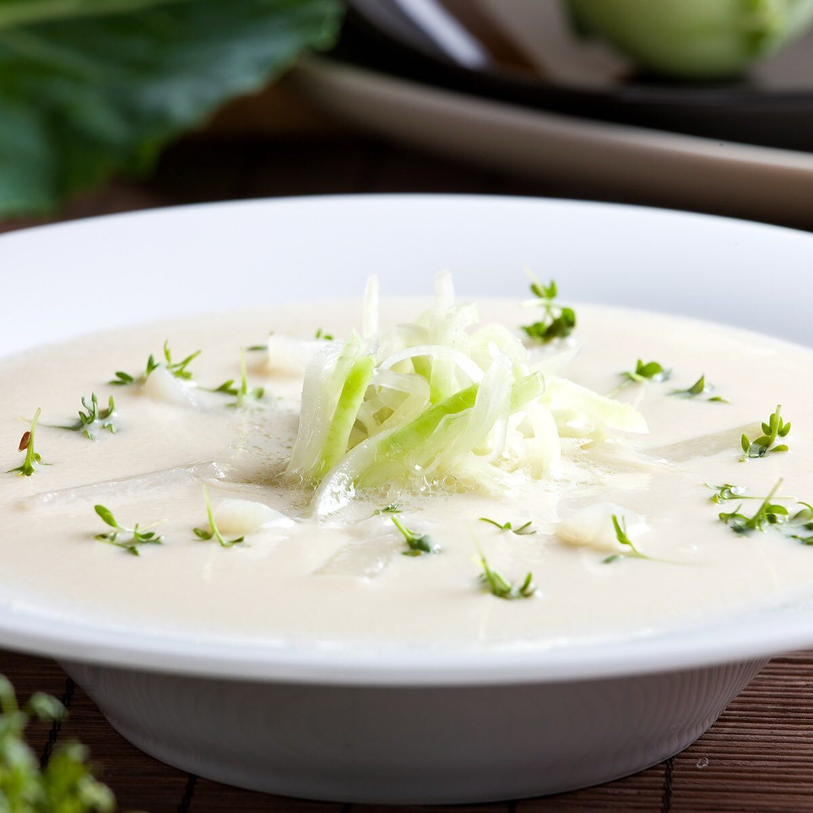

Kalerábová polievka podľa @metro_sk — Normy Jedál
METRO vám prináša inšpiráciu na máj! Skúsite náš skvelý recept na jarnú kalerábovú polievku? 😋
Link na recept nájdete v BIO. ↗️
.
.
.
#metro #metrosk #kupitevmetro #kupitevmetre #recept #inspiracia #recipe #inspiration #may #maj #spring #jar #soup #polievka #kalerab #kohlrabi #kalerabovapolievka #kohlrabisoup